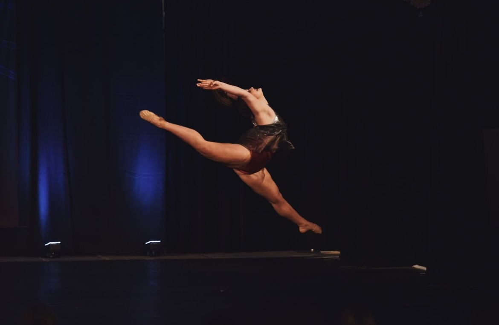

I was born and raised in Charlotte, NC. For the past 19 years I have called Charlotte my home. At the age of 2 my parents put me in my first ballet class, where for the next 16 years dance became my passion. I spent many hours a week in the studio and was determined to become a proffesional dancer. I have one older brother who is 17 months older than me, and plays college baseball. My mom has been a labor and deivery nurse for almost 30 years. My dad is a football coach and has coached professional, college, and currently highschool football. I have a dog named Duke and a cat named Sassy.
In high school I attended Northwest School of the Arts, for my freshman and sophmore year. I was a dance major and my schedule consisted of dance classes for half of the school day, then academics for the remaing of the school day. I was president of National Dance Honnors Society. For my junior and senior year I transfered to Queens Grant High School where I was a captin on varsity volleyball and varsity cheer. I currently attend Elon University. Where I am majoring in Journalism with a minnor in sports managment and dance. I am also a Elon Sports Vision Scholar.